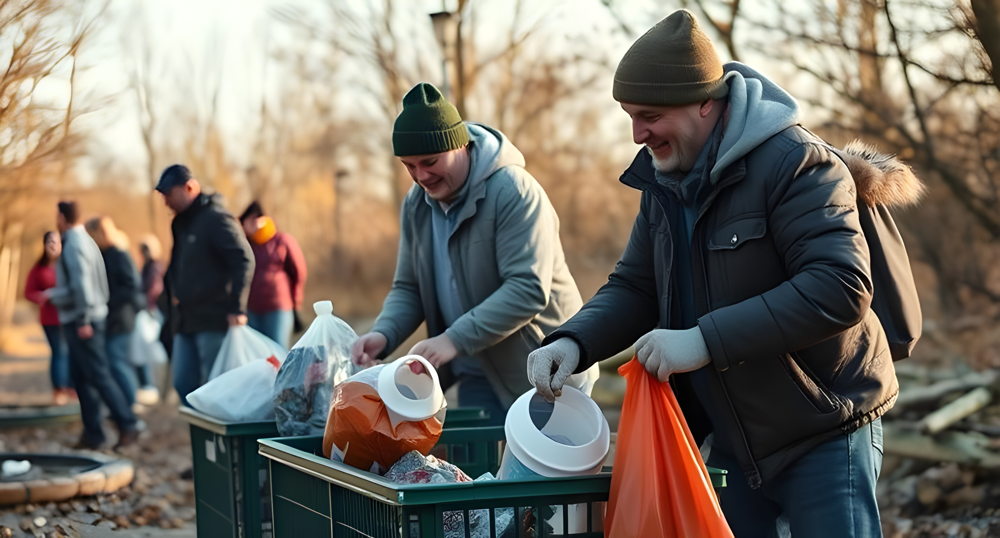

Who Are We?
Naturefy is a non-profit organization leading one of the world’s largest environmental conservation movements.
Our Mission
We are committed to combating the human impact on the environment, a battle that has been ongoing since the 1700s. Our goal is to educate and empower people worldwide to combat pollution and prevent further destruction of nature.
Our Goals
We aim to achieve the following ambitious goals:
- Environmental Education: Mandating environmental awareness classes in schools and universities.
- Waste Reduction: Limiting industrial waste production that harms the environment.
- Cleanup Milestones: Collecting at least 10 million tons of trash by 2030.
Join us in the fight to protect the environment and create a sustainable future for all!
Our Achievements
Here are some of our most notable accomplishments:
- Record Trash Pickup: Hosting the third-largest trash pickup event in history in Lahore, Pakistan.
- Innovation in Cleanup: Co-designing the SeaClear System, the world’s most advanced ocean cleaning technology.
- Raising Funds: Securing over $1.2 billion for environmental cleanup research and solutions.
Help make a difference today. Join Naturefy and support our mission to save the planet!